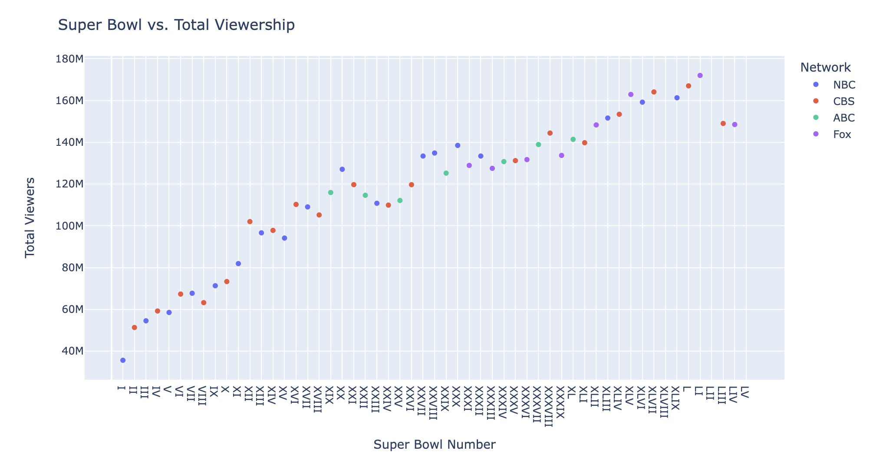

Marks
- Area
- The bar at the top of the page uses area marks to represent electoral votes for each candidate
- The map uses an area mark to represent each state
Channels
- Color (hue)
- Both the bar and the map use color to represent Clinton vs. Trump (categorical)
- This is a good mapping because it clearly differentiates between the two categories being represented
- Length
- The bar uses length to represent the proportion/number of votes going to each candidate (ordered quantitative, discrete)
- This is a good encoding because it effectively communicates proportions where gleaning that just from the map below it may have been less accurate
Color Map(s)
- Categorical
- Represents political party/candidate. Specifically, blue = Clinton and red = Trump (categorical)
- This is a good mapping because the attribute is categorical and people in the United States (likely the location of the target users) tend to associate blue with the democratic party and red with the republican party. The contrasting colors also make it easy to differentiate between the two categories.

Marks
- Points
- Each point on the graph represents a batted ball
- Lines
- Different lines on the graph indicate what type of ball each region of the graph represents
Channels
- Position on a common scale (both horizontal and vertical)
- Represents exit velocity vs. launch angle (ordered quantitative, continuous)
- This is a good mapping because it makes it easy to see the relationship between the two variables
- Color (saturation)
- Represents where the scoring value of the ball falls relative to the average scoring value (ordered quantitative)
- This is a good mapping because it is a good representation of an ordered attribute and clearly groups above vs. below average. Still, this channel gives up some of the discriminability of where the points fall on the scale, especially at the high and low ends of the spectrum.
- Color (hue)
- Represents if the scoring value of the ball was below average, average, or above average (categorical)
- This is a good mapping because clearly groups above vs. below average.
Color Map(s)
- Divergent
- Represents the scoring value of the ball relative to the average scoring value (ordered quantitative)
- This is a good mapping because it is used to indicate a range of values with the average represented with a neutral color in the middle. The low saturation of the colors chosen help decrease the chance of color impacting users' perception of the proportion of each category

Marks
- Points
- Each point on the graph represents one football game
Channels
- Position on a common scale (both horizontal and vertical)
- Represents the Super Bowl number vs. total viewers watching a given game (ordered ordinal)
- This is a good mapping because there it is able to show the growing trend of the number of viewers.
- Color
- Represents the network that is streaming the game during a given year (categorical)
- This is a good mapping because it clearly represents the different channels that are broadcasting a Super Bowl during a given year.
Color Map(s)
- Categorical
- Represents the network that is streaming the Super Bowl during a given year
- This is a good mapping because it is used to represent a different channel. The colors are easy to differentiate, and they are roughly the same saturation